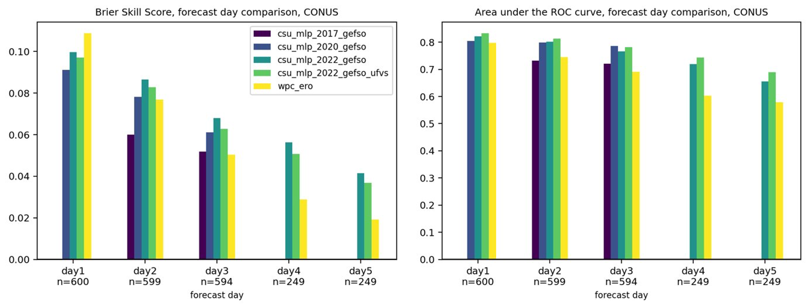

Collaborations with NOAA's Weather Prediction Center over the past few years have yielded operationally-ready Machine Learning (ML)-based prediction systems focused on excessive rainfall. These systems have used Random Forests (RFs) to train environmental predictors against observed records of excessive rainfall, defined as instances of average recurrence interval (ARI) exceedances.
Previous prediction models were developed with the former Global Ensemble Foreast System (GEFS). In October 2020, the GEFS model was upgraded to a new dynamical core and finer resolution, which has necessitated a retraining of the RF models. Additionally, a new excessive rainfall dataset was constructed (Unified Flood Verification System; UFVS) using a variety of independent datasets allowing for a "new" construction of the RFs. This project is tasked with 1) updating previously operationalized models with the new Finite Volume Cubed-sphere GEFS and train a new system that defines excessive rainfall with the UFVS. Additionally, the original prediction system generated forecasts for days 1--3, but this project will extend the experimental forecasts out to day 8 in support of Weather Prediction Center operations.
Initial forecasts and results suggest that the UFVS-trained models have objectively slightly poorer skill than their ARI-trained counterparts over a 1.5 verification period (see Figure below). However, subjective interpretations from the warm season of 2022, during the Flash Flood and Intense Rainfall Experiment, suggest the UFVS-trained models are outperforming the ARI models. All evaluations are preliminary, and naturally suffer from sampling error and a limited sample size.
Skill and resolution metrics also suggest that forecasts can be made skillfully into days 4 and 5, although skill has decreased drastically from day 1 to 5. More work needs to be done to fully evaluate the value and utility of long-term excessive rainfall forecasts from the ML system.

Figure: